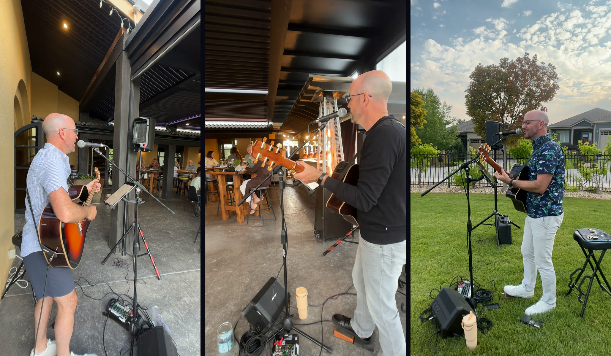
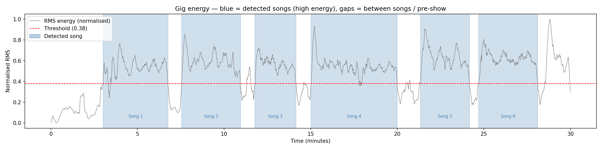
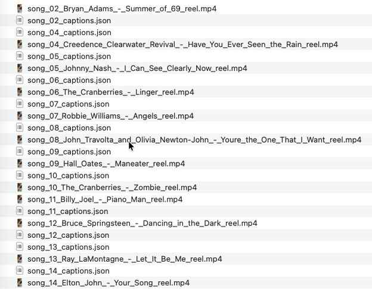

Colin Calnan / Builds / Music and AI
Gig Splitter
I record every gig on a phone clipped to the speaker stand. One command turns that two-hour video into a file per song, named by what I actually played, and a 30-second chorus reel for each one.
- Status
- Running. Used on six gigs so far
- Built
- May 2026. The first working version in one night
- Stack
- Python, librosa, ffmpeg, Whisper, Claude
- How
- Built in Claude Code, every commit
- In
- One portrait video of a whole gig, 1080 by 1920
- Out
- A file per song, a reel per song, editable captions

How it works
Two hours in, a folder of reels out.
Run as python split_gig.py ~/Movies/Gigs/<gig>/IMG_xxxx.MOV. Every step skips work already on disk, so a rerun picks up where it stopped.
Find the songs by how loud they are
ffmpeg pulls the audio out and librosa measures its loudness, smoothed over 15 seconds so a quiet verse doesn't split a song in half. Anything above a threshold for more than 90 seconds is a song. Anything below is me talking.

One gig, 120 minutes. Each shaded band is a song it found. The white gaps are me talking between them. Cut each song out without re-encoding
ffmpeg stream-copies each band to its own file, so the cut is fast and nothing loses quality.
Name the song from garbled lyrics
Whisper transcribes a minute of each song, and Claude names it from the transcript, knowing the words will be wrong but the phrases close. If the minute turns out to be banter, it tries later in the song.
Predator Ridge, reels folderreal output, one bug includedsong_02_Van_Morrison_-_Bright_Side_of_the_Road_reel.mp4 song_03_The_Beatles_-_All_You_Need_Is_Love_reel.mp4 song_04_Creedence_Clearwater_Revival_-_Have_You_Ever_Seen_the_Rain_reel.mp4 song_07_Sting_-_Englishman_in_New_York_reel.mp4 song_09_Van_Morrison_-_Brown_Eyed_Girl_reel.mp4 song_10_Bruce_Springsteen_-_Dancing_in_the_Dark_reel.mp4 song_11_Hall_Oates_-_Maneater_reel.mp4 song_13_Me_by_Ben_E_King_-_Stand_reel.mp4 song_21_ACDC_-_Highway_to_Hell_reel.mp4 song_26_ABBA_-_Dancing_Queen_reel.mp4Ten of the 23 reels from 8 May 2026. Song 13 is "Stand By Me", and it's explained under "Still gets wrong".
Find the chorus
A second Whisper pass gets word timings for 90 seconds of the song. The reel starts two seconds before the phrase that repeats most, which is almost always the chorus, the bit people know. No repeat, and it starts a quarter of the way in.
split_gig.pyfind_chorus()def find_chorus(transcript: str) -> str: words = transcript.lower().split() best_phrase, best_score = "", 0 for n in range(8, 3, -1): seen = {} for i in range(len(words) - n): phrase = " ".join(words[i:i+n]) seen[phrase] = seen.get(phrase, 0) + 1 for phrase, count in seen.items(): score = count * len(phrase) if count > 1 and score > best_score: best_phrase, best_score = phrase, score return best_phrase
Cut the reel
30 seconds at 1080 by 1920, karaoke captions burned in from a subtitle file, and the captions saved as editable JSON next to it so a wrong word can be fixed and re-burned without rerunning anything.

The output folder from another gig. Every reel has its captions beside it, and the folder reads as the set list.
How AI was used
Built with Claude, and runs on it too.
Built in Claude Code
All 17 commits carry Claude as co-author, from the first one on 9 May, the night it was built. It came before I packaged the method as my spec-driven development skill, so there's no specs folder behind this one.
A model that listens
Whisper transcribes a minute of each song to identify it, and a 90-second window with word timings to find the chorus and time the captions.
A model that names the song
Claude Sonnet gets the garbled lyrics, is told the words will be wrong but the phrases close, and answers in one fixed format. That format is also where the "Stand By Me" bug comes from.
Plain code where plain code is enough
Finding the songs is loudness and a threshold. Finding the chorus is counting repeated phrases. No model in either, so they're free, fast and predictable.
What stayed mine
Playing the gig, picking which reels are worth posting, and the captions, which I do by hand in InShot.
The hard parts
What fought back.
Shazam can't recognise a live cover
The first version used it, and it failed on every song, because it matches studio recordings and a live acoustic cover isn't one. It was gone the same night. Reading the lyrics and letting Claude name the song is the decision the whole tool rests on.
I had the loudness backwards
My first guess was that the crowd chatting between songs would be louder than me. It was the other way round, so songs are the loud parts.
A truncated cache hid half the gig
A cut-short audio cache meant only 15 of 28 songs were found on the first real run. It now checks the cached audio's length against the video before trusting it.
Knowing which job to hand back
Since late May I run it with captions off and caption in InShot. The script finds, cuts and names the songs. The words on screen I do myself.
Still gets wrong
Where it breaks.
"Stand By Me"
Claude is asked to reply as
"Song Title" by Artist, and the parser splits on the first " by ". So "Stand By Me" by Ben E. King becomesMe_by_Ben_E_King_-_Stand. It has happened at four of the six gigs, including the Predator Ridge folder above.One threshold doesn't fit every room
At Cadence in August the default threshold welded songs together into one 9 minute 47 second segment. I fixed it by trying other values and splitting two songs by hand, and got one of those splits wrong.
No model looks at the picture
The models only hear and read. The reel window comes from the lyrics and the framing is a fixed ffmpeg filter. Letting a model choose the best frame for each song is the next layer.
A filter that does nothing
Each reel gets a blurred copy of the video behind it, to fill the frame. My footage is already portrait, so the blur never shows.
Runs
Six gigs so far.
| Gig | What happened |
|---|---|
| 8 May 2026 | Predator Ridge. 28 songs found, 23 reels cut. The truncated-cache bug turned up here. |
| May 2026 | Britannia Brewing. |
| 29 May | Ex Nihilo. The first run with captions switched off. |
| 7 Jun | Folktale Fine Cider. "Stand By Me" again. |
| 22 Jun | Ex Nihilo. 26 of 26 songs found. |
| 19 Aug | Cadence. The threshold failed and two songs were split by hand. |
From the output folders and the project history. The August runs took about 75 minutes for 26 reels.
- Python
- librosa
- ffmpeg
- Whisper
- Claude Sonnet
- Gradio
- Docker